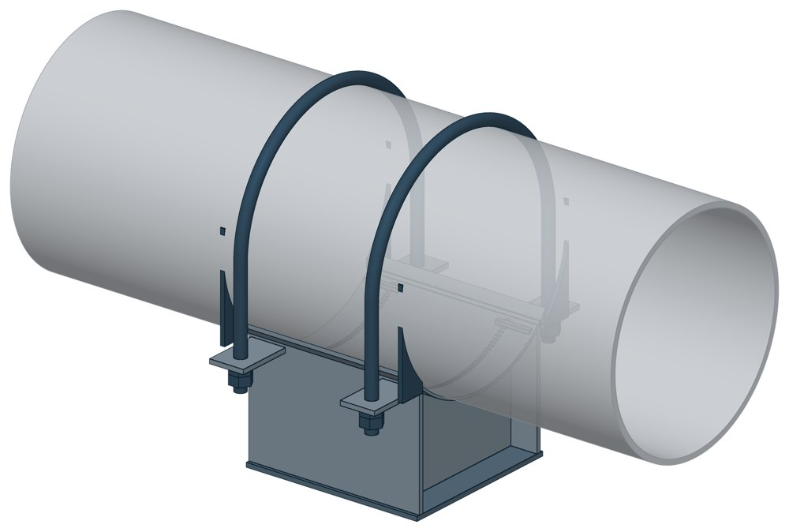

Опоры хомутовые неподвижные ОСТ 34-10-618-93
ОСТ 34-10-618-93. Dн 57–1620 мм, вертикальная нагрузка — до 330 кН, масса 1,2–539 кг.

- Диаметр трубы Dн
- 57–1620 мм
- Документ
- ОСТ 34-10-618-93
- Исполнений
- 98
- Вертикальная нагрузка
- до 330 кН
- Масса
- 1,2–539 кг
- 3D-модели
- у всех исполнений (условные: общий вид по габаритам)
Таблица исполнений ОСТ 34-10-618-93
| Обозначение | Код ПРОМБУРГ | Dнмм | Вертикальная нагрузкакН | Длина опорымм | Массакг | 3D |
|---|---|---|---|---|---|---|
| 57У-01 ОСТ 34-10-618-93 | ПБ-34618-0057-1 | 57 | 0,7 | 100 | 1,2 | 3D |
| 57К-02 ОСТ 34-10-618-93 | ПБ-34618-0057-2 | 57 | 0,7 | 100 | 1,2 | 3D |
| 76У-03 ОСТ 34-10-618-93 | ПБ-34618-0076-1 | 76 | 1,5 | 100 | 1,5 | 3D |
| 76К-04 ОСТ 34-10-618-93 | ПБ-34618-0076-2 | 76 | 1,5 | 100 | 1,5 | 3D |
| 89У-05 ОСТ 34-10-618-93 | ПБ-34618-0089-1 | 89 | 2 | 100 | 1,8 | 3D |
| 89К-06 ОСТ 34-10-618-93 | ПБ-34618-0089-2 | 89 | 2 | 100 | 1,8 | 3D |
| 108У-07 ОСТ 34-10-618-93 | ПБ-34618-0108-1 | 108 | 3,6 | 150 | 3,1 | 3D |
| 108К-08 ОСТ 34-10-618-93 | ПБ-34618-0108-2 | 108 | 3,6 | 150 | 3,1 | 3D |
| 108У-09 ОСТ 34-10-618-93 | ПБ-34618-0108-3 | 108 | 3,6 | 150 | 3,7 | 3D |
| 108К-10 ОСТ 34-10-618-93 | ПБ-34618-0108-4 | 108 | 3,6 | 150 | 3,7 | 3D |
| 133У-11 ОСТ 34-10-618-93 | ПБ-34618-0133-1 | 133 | 4,3 | 150 | 3,8 | 3D |
| 133К-12 ОСТ 34-10-618-93 | ПБ-34618-0133-2 | 133 | 4,3 | 150 | 3,8 | 3D |
| 133У-13 ОСТ 34-10-618-93 | ПБ-34618-0133-3 | 133 | 4,3 | 150 | 4,4 | 3D |
| 133К-14 ОСТ 34-10-618-93 | ПБ-34618-0133-4 | 133 | 4,3 | 150 | 4,4 | 3D |
| 159У-15 ОСТ 34-10-618-93 | ПБ-34618-0159-1 | 159 | 6 | 150 | 4,6 | 3D |
| 159К-16 ОСТ 34-10-618-93 | ПБ-34618-0159-2 | 159 | 6 | 150 | 4,6 | 3D |
| 159У-17 ОСТ 34-10-618-93 | ПБ-34618-0159-3 | 159 | 6 | 150 | 5,2 | 3D |
| 159К-18 ОСТ 34-10-618-93 | ПБ-34618-0159-4 | 159 | 6 | 150 | 5,2 | 3D |
| 219У-19 ОСТ 34-10-618-93 | ПБ-34618-0219-1 | 219 | 11 | 200 | 10,5 | 3D |
| 219К-20 ОСТ 34-10-618-93 | ПБ-34618-0219-2 | 219 | 11 | 200 | 11,3 | 3D |
| 219У-21 ОСТ 34-10-618-93 | ПБ-34618-0219-3 | 219 | 11 | 200 | 12 | 3D |
| 219К-22 ОСТ 34-10-618-93 | ПБ-34618-0219-4 | 219 | 11 | 200 | 13 | 3D |
| 273У-23 ОСТ 34-10-618-93 | ПБ-34618-0273-1 | 273 | 19 | 200 | 14 | 3D |
| 273К-24 ОСТ 34-10-618-93 | ПБ-34618-0273-2 | 273 | 19 | 200 | 15 | 3D |
| 273У-25 ОСТ 34-10-618-93 | ПБ-34618-0273-3 | 273 | 19 | 200 | 16 | 3D |
| 273К-26 ОСТ 34-10-618-93 | ПБ-34618-0273-4 | 273 | 19 | 200 | 17 | 3D |
| 325У-27 ОСТ 34-10-618-93 | ПБ-34618-0325-1 | 325 | 25 | 300 | 27 | 3D |
| 325К-28 ОСТ 34-10-618-93 | ПБ-34618-0325-2 | 325 | 25 | 300 | 28 | 3D |
| 325У-29 ОСТ 34-10-618-93 | ПБ-34618-0325-3 | 325 | 25 | 300 | 29 | 3D |
| 325К-30 ОСТ 34-10-618-93 | ПБ-34618-0325-4 | 325 | 25 | 300 | 31 | 3D |
| 377У-31 ОСТ 34-10-618-93 | ПБ-34618-0377-1 | 377 | 30 | 300 | 28 | 3D |
| 377К-32 ОСТ 34-10-618-93 | ПБ-34618-0377-2 | 377 | 30 | 300 | 30 | 3D |
| 377У-33 ОСТ 34-10-618-93 | ПБ-34618-0377-3 | 377 | 30 | 300 | 31 | 3D |
| 377К-34 ОСТ 34-10-618-93 | ПБ-34618-0377-4 | 377 | 30 | 300 | 32 | 3D |
| 426У-35 ОСТ 34-10-618-93 | ПБ-34618-0426-1 | 426 | 36 | 400 | 58 | 3D |
| 426К-36 ОСТ 34-10-618-93 | ПБ-34618-0426-2 | 426 | 36 | 400 | 61 | 3D |
| 426У-37 ОСТ 34-10-618-93 | ПБ-34618-0426-3 | 426 | 36 | 400 | 63 | 3D |
| 426К-38 ОСТ 34-10-618-93 | ПБ-34618-0426-4 | 426 | 36 | 400 | 66 | 3D |
| 478У-39 ОСТ 34-10-618-93 | ПБ-34618-0478-1 | 478 | 36 | 400 | 60 | 3D |
| 478К-40 ОСТ 34-10-618-93 | ПБ-34618-0478-2 | 478 | 36 | 400 | 64 | 3D |
| 478У-41 ОСТ 34-10-618-93 | ПБ-34618-0478-3 | 478 | 36 | 400 | 65 | 3D |
| 478К-42 ОСТ 34-10-618-93 | ПБ-34618-0478-4 | 478 | 36 | 400 | 68 | 3D |
| 530У-43 ОСТ 34-10-618-93 | ПБ-34618-0530-1 | 530 | 45 | 500 | 72 | 3D |
| 530К-44 ОСТ 34-10-618-93 | ПБ-34618-0530-2 | 530 | 45 | 500 | 75 | 3D |
| 530У-45 ОСТ 34-10-618-93 | ПБ-34618-0530-3 | 530 | 45 | 500 | 77 | 3D |
| 530К-46 ОСТ 34-10-618-93 | ПБ-34618-0530-4 | 530 | 45 | 500 | 80 | 3D |
| 630У-47 ОСТ 34-10-618-93 | ПБ-34618-0630-1 | 630 | 60 | 500 | 94 | 3D |
| 630К-48 ОСТ 34-10-618-93 | ПБ-34618-0630-2 | 630 | 60 | 500 | 98 | 3D |
| 630У-49 ОСТ 34-10-618-93 | ПБ-34618-0630-3 | 630 | 60 | 500 | 100 | 3D |
| 630К-50 ОСТ 34-10-618-93 | ПБ-34618-0630-4 | 630 | 60 | 500 | 104 | 3D |
| 720У-51 ОСТ 34-10-618-93 | ПБ-34618-0720-1 | 720 | 75 | 600 | 123 | 3D |
| 720К-52 ОСТ 34-10-618-93 | ПБ-34618-0720-2 | 720 | 75 | 600 | 131 | 3D |
| 720У-53 ОСТ 34-10-618-93 | ПБ-34618-0720-3 | 720 | 75 | 600 | 130 | 3D |
| 720К-54 ОСТ 34-10-618-93 | ПБ-34618-0720-4 | 720 | 75 | 600 | 138 | 3D |
| 820У-55 ОСТ 34-10-618-93 | ПБ-34618-0820-1 | 820 | 95 | 600 | 129 | 3D |
| 820К-56 ОСТ 34-10-618-93 | ПБ-34618-0820-2 | 820 | 95 | 600 | 137 | 3D |
| 820У-57 ОСТ 34-10-618-93 | ПБ-34618-0820-3 | 820 | 95 | 600 | 136 | 3D |
| 820К-58 ОСТ 34-10-618-93 | ПБ-34618-0820-4 | 820 | 95 | 600 | 145 | 3D |
| 920У-59 ОСТ 34-10-618-93 | ПБ-34618-0920-1 | 920 | 115 | 700 | 220 | 3D |
| 920К-60 ОСТ 34-10-618-93 | ПБ-34618-0920-2 | 920 | 115 | 700 | 236 | 3D |
| 920У-61 ОСТ 34-10-618-93 | ПБ-34618-0920-3 | 920 | 115 | 700 | 231 | 3D |
| 920К-62 ОСТ 34-10-618-93 | ПБ-34618-0920-4 | 920 | 115 | 700 | 246 | 3D |
| 1020У-63 ОСТ 34-10-618-93 | ПБ-34618-1020-1 | 1020 | 135 | 700 | 228 | 3D |
| 1020К-64 ОСТ 34-10-618-93 | ПБ-34618-1020-2 | 1020 | 135 | 700 | 246 | 3D |
| 1020У-65 ОСТ 34-10-618-93 | ПБ-34618-1020-3 | 1020 | 135 | 700 | 238 | 3D |
| 1020К-66 ОСТ 34-10-618-93 | ПБ-34618-1020-4 | 1020 | 135 | 700 | 255 | 3D |
| 1220У-67 ОСТ 34-10-618-93 | ПБ-34618-1220-1 | 1220 | 185 | 800 | 309 | 3D |
| 1220К-68 ОСТ 34-10-618-93 | ПБ-34618-1220-2 | 1220 | 185 | 800 | 332 | 3D |
| 1220У-69 ОСТ 34-10-618-93 | ПБ-34618-1220-3 | 1220 | 185 | 800 | 323 | 3D |
| 1220К-70 ОСТ 34-10-618-93 | ПБ-34618-1220-4 | 1220 | 185 | 800 | 344 | 3D |
| 1420У-71 ОСТ 34-10-618-93 | ПБ-34618-1420-1 | 1420 | 260 | 900 | 358 | 3D |
| 1420К-72 ОСТ 34-10-618-93 | ПБ-34618-1420-2 | 1420 | 260 | 900 | 380 | 3D |
| 1420У-73 ОСТ 34-10-618-93 | ПБ-34618-1420-3 | 1420 | 260 | 900 | 369 | 3D |
| 1420К-74 ОСТ 34-10-618-93 | ПБ-34618-1420-4 | 1420 | 260 | 900 | 393 | 3D |
| 1620У-75 ОСТ 34-10-618-93 | ПБ-34618-1620-1 | 1620 | 330 | 900 | 495 | 3D |
| 1620К-76 ОСТ 34-10-618-93 | ПБ-34618-1620-2 | 1620 | 330 | 900 | 522 | 3D |
| 1620У-77 ОСТ 34-10-618-93 | ПБ-34618-1620-3 | 1620 | 330 | 900 | 512 | 3D |
| 1620К-78 ОСТ 34-10-618-93 | ПБ-34618-1620-4 | 1620 | 330 | 900 | 539 | 3D |
| 920У-79 ОСТ 34-10-618-93 | ПБ-34618-0920-5 | 920 | 115 | 700 | 232 | 3D |
| 920К-80 ОСТ 34-10-618-93 | ПБ-34618-0920-6 | 920 | 115 | 700 | 232 | 3D |
| 920У-81 ОСТ 34-10-618-93 | ПБ-34618-0920-7 | 920 | 115 | 700 | 242 | 3D |
| 920К-82 ОСТ 34-10-618-93 | ПБ-34618-0920-8 | 920 | 115 | 700 | 242 | 3D |
| 1020У-83 ОСТ 34-10-618-93 | ПБ-34618-1020-5 | 1020 | 135 | 700 | 240 | 3D |
| 1020К-84 ОСТ 34-10-618-93 | ПБ-34618-1020-6 | 1020 | 135 | 700 | 240 | 3D |
| 1020У-85 ОСТ 34-10-618-93 | ПБ-34618-1020-7 | 1020 | 135 | 700 | 250 | 3D |
| 1020К-86 ОСТ 34-10-618-93 | ПБ-34618-1020-8 | 1020 | 135 | 700 | 250 | 3D |
| 1220У-87 ОСТ 34-10-618-93 | ПБ-34618-1220-5 | 1220 | 185 | 800 | 326 | 3D |
| 1220К-88 ОСТ 34-10-618-93 | ПБ-34618-1220-6 | 1220 | 185 | 800 | 326 | 3D |
| 1220У-89 ОСТ 34-10-618-93 | ПБ-34618-1220-7 | 1220 | 185 | 800 | 338 | 3D |
| 1220К-90 ОСТ 34-10-618-93 | ПБ-34618-1220-8 | 1220 | 185 | 800 | 338 | 3D |
| 1420У-91 ОСТ 34-10-618-93 | ПБ-34618-1420-5 | 1420 | 260 | 900 | 377 | 3D |
| 1420К-92 ОСТ 34-10-618-93 | ПБ-34618-1420-6 | 1420 | 260 | 900 | 377 | 3D |
| 1420У-93 ОСТ 34-10-618-93 | ПБ-34618-1420-7 | 1420 | 260 | 900 | 390 | 3D |
| 1420К-94 ОСТ 34-10-618-93 | ПБ-34618-1420-8 | 1420 | 260 | 900 | 390 | 3D |
| 1620У-95 ОСТ 34-10-618-93 | ПБ-34618-1620-5 | 1620 | 330 | 900 | 506 | 3D |
| 1620К-96 ОСТ 34-10-618-93 | ПБ-34618-1620-6 | 1620 | 330 | 900 | 506 | 3D |
| 1620У-97 ОСТ 34-10-618-93 | ПБ-34618-1620-7 | 1620 | 330 | 900 | 524 | 3D |
| 1620К-98 ОСТ 34-10-618-93 | ПБ-34618-1620-8 | 1620 | 330 | 900 | 524 | 3D |
Чтобы заказать, сообщите обозначение и код ПРОМБУРГ: +7 (499) 325-51-35, promburg@yandex.ru.
Нормативные документы
- ОСТ 34-10-618-93 Опора хомутовая неподвижная. Типы и основные размеры — документ, по которому изготавливается изделие
Связанные позиции
- Парная подвижная опора: ОСТ 34-10-617-93 — Опоры хомутовые скользящие (общий диапазон Dн 57–1620)
Собрать узел с этим изделием
- Конструктор узла: собрать участок с компенсатором под свои данные труба, длина, среда, условия — состав узла и спецификация бесплатно
На трубу Dн 57–1620 мм в каталоге
Позиции каталога с исполнениями на те же наружные диаметры трубы.
Детали трубопровода
- Фланец стальной плоский приварной общих Dн: 19
- Фланец стальной воротниковый общих Dн: 18
- Отвод стальной крутоизогнутый 90° общих Dн: 17
- Отвод стальной крутоизогнутый 90°, 09Г2С общих Dн: 15
- Заглушка стальная эллиптическая общих Dн: 13
- Переход стальной концентрический общих Dн: 12
- Днище стальное эллиптическое общих Dн: 9
- Отвод нержавеющий 90° общих Dн: 1
Компенсаторы
- Компенсатор сильфонный стартовый СК общих Dн: 19
- Компенсатор сильфонный 2ОПКР общих Dн: 18
- Компенсатор сильфонный 2ОПКР (ИЯНШ) 2ОПКРИ общих Dн: 18
- Компенсатор сильфонный 2СКУ.М 2СКУМ общих Dн: 18
- Компенсатор сильфонный 2СКУ.М (ИЯНШ) 2СКУМИ общих Dн: 18
- Компенсатор сильфонный 2СКУ.ППМ (ИЯНШ) 2СКУППМИ общих Dн: 18
- Компенсатор сильфонный КС общих Dн: 18
- Компенсатор сильфонный КСО общих Dн: 18
- Компенсатор сильфонный КСО (ИЯНШ) КСОИ общих Dн: 18
- Компенсатор сильфонный КСОФ общих Dн: 18
- Компенсатор сильфонный ОПКР общих Dн: 18
- Компенсатор сильфонный ОПКР (ИЯНШ) ОПКРИ общих Dн: 18
- Компенсатор сильфонный сейсмический общих Dн: 18
- Компенсатор сильфонный СКУ.М СКУМ общих Dн: 18
И ещё 21 тип — в оглавлении каталога.
Другие опоры и подвески
- Опора приварная скользящая и неподвижная ОСТ 34-10-616-93 общих Dн: 21
- Опоры хомутовые скользящие ОСТ 34-10-617-93 общих Dн: 21
- Опоры скользящие неподвижные ОСТ 34-10-623-93 общих Dн: 21
- Блок подвески с опорной балкой ОСТ 34-10-726-93 общих Dн: 21
- Опоры приварные неподвижные скользящие ОПН общих Dн: 20
- Опоры сварные скользящие неподвижные и направляющие СТО 79814898-130 общих Dн: 20
- Опора неподвижная двухупорная ТС-660 общих Dн: 19
- Опорные плиты диэлектрические ТС-632 общих Dн: 19
- Опора скользящая и неподвижная ОСТ 34-10-615-93 общих Dн: 18
- Хомутовые опоры СК 2109-92 общих Dн: 17
И ещё 99 типов — в оглавлении каталога.
Другие типы раздела
Опоры трубопроводов ТЭС и АЭС (ОСТ 34-10-610…623-93)
- Опоры неподвижные для вертикальных коробов ОСТ 34-10-610-93
- Блоки двухкатковые ОСТ 34-10-611-93
- Блоки катковые пружинные ОСТ 34-10-612-93
- Опора скользящая и неподвижная ОСТ 34-10-615-93
- Опора приварная скользящая и неподвижная ОСТ 34-10-616-93
- Опоры хомутовые скользящие ОСТ 34-10-617-93
- Опора катковая ОСТ 34-10-619-93
- Опоры скользящие и неподвижные с направляющим хомутом ОСТ 34-10-620-93
- Опоры сварных отводов ОСТ 34-10-621-93
- Опоры трубчатые крутоизогнутых отводов ОСТ 34-10-622-93
- Опоры скользящие неподвижные ОСТ 34-10-623-93
Частые вопросы
Чем неподвижная опора отличается от подвижной?
Неподвижная закрепляет трубу в одной точке и принимает усилия от температурного расширения, давления и трения. Подвижная держит вес трубы и даёт ей перемещаться при нагреве. Неподвижные делят трассу на участки компенсации, подвижные стоят между ними. Место и тип каждой опоры задаёт проект.
Какую неподвижную опору выбрать: хомутовую, упорную, щитовую?
Выбор идёт по расчётной осевой силе и по тому, на что опора опирается. Малый диаметр и небольшая сила — хомутовая ТС-659. Нужна высота под изоляцию — хомутовая с корпусом ТС-670 или бугельная ТС-671. Труба проходит сквозь стенку — щитовая ТС-666, при большой силе усиленная ТС-667. Упор в балку или траверсу — двух- и четырёхупорные ТС-660, ТС-661, при больших нагрузках усиленные ТС-663, ТС-664.
По какому диаметру подбирать — Dн или Ду?
По наружному диаметру трубы Dн: именно он стоит в таблицах серии. Ду — условный проход, округлённая величина: Ду 100 соответствует Dн 108. В заявке указывайте Dн и толщину стенки трубы.
Какую нагрузку выдерживает опора?
Допускаемая нагрузка задана в таблице для каждого исполнения — она в первой группе колонок каждой карточки. Хомутовая ТС-659 — осевая Q от 5 до 25 кН, щитовая ТС-666 — от 50 до 3300 кН, хомутовая с корпусом ТС-670 — Q до 380 кН и боковая T до 200 кН.
Кто считает нагрузку на неподвижную опору?
Нагрузку определяет проектировщик расчётом трубопровода на прочность и компенсацию: она зависит от схемы трассы, а не только от диаметра. По заданным Dн, стенке и нагрузкам Q, P, T подбирается исполнение из таблицы.
Неподвижную опору приваривают к строительной конструкции?
Упоры и щиты приваривают к трубе, а к несущей конструкции они прилегают свободно, без приварки — так разгружаются от крутящих моментов и опора, и конструкция. У хомутовой ТС-659 упоры приваривают к трубе, а хомут — к балке.